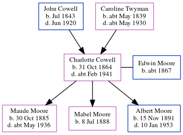

Charlotte Priscilla Ann Moore (née Cowell) 1864 - c1941
[ Home ] | [ Calendar ] | [ Surnames Index ] | [ Errors ] | [ Family History ]A domestic servant and the child of John Cowell (a labourer) and Caroline Twyman, Charlotte Cowell, the first cousin three-times-removed on the mother's side of Nigel Horne, was born in Wickhambreaux, Kent, England on 31 Oct 18641,2,3,4,5,6,7,8, was baptised there on 25 Dec 1864 and married Edwin Moore (a carpenter with whom she had 3 children: Maude Rebecca Caroline, Mabel Emily Charlotte and Albert Edwin George) at St James the Great, East Malling, Kent, England on 30 Aug 188510 (Jul/Aug/Sep).
During her life, she was living at London Road, Ditton, Kent on 2 Apr 187113; at 31 John Street, Maidstone, Kent on 3 Apr 188111; at Standard Road, Bexley, London, England on 5 Apr 189114; at Priory Walk, Tonbridge, Kent on 31 Mar 19014; at 5 Alexandra Road, Tonbridge, Kent on 2 Apr 191112; and at London Road, Malling, Kent on 29 Sept 19396.
She died c. Feb 1941 in Maidstone, Kent, England7,9.
Parents
- John was born in Jul 1843
- Caroline was born c. May 1839
Children
- Maude Rebecca Caroline was born on 30 Oct 1885
- Mabel Emily Charlotte was born on 8 Jul 1888
- Albert Edwin George was born on 15 Nov 1891
Citations
- 1871 England Census Online publication - Provo, UT, USA: The Generations Network, Inc., 2004.Original data - Census Returns of England and Wales, 1871. Kew, Surrey, England: The National Archives of the UK (TNA): Public Record Office (PRO), 1871. Data imaged from the National
- 1891 England Census Online publication - Provo, UT, USA: The Generations Network, Inc., 2005.Original data - Census Returns of England and Wales, 1891. Kew, Surrey, England: The National Archives of the UK (TNA): Public Record Office (PRO), 1891. Data imaged from The National
- 1901 England Census Online publication - Provo, UT, USA: The Generations Network, Inc., 2005.Original data - Census Returns of England and Wales, 1901. Kew, Surrey, England: The National Archives of the UK (TNA): Public Record Office (PRO), 1901. Data imaged from the National
- 1901 England, Wales & Scotland Census - Findmypast (was age 36 and the wife of the head of the household)
- 1911 England Census Online publication - Provo, UT, USA: Ancestry.com Operations, Inc., 2011.Original data - Census Returns of England and Wales, 1911. Kew, Surrey, England: The National Archives of the UK (TNA), 1911. Data imaged from the National Archives, London, England.
- 1939 Register - Findmypast (was recorded at this address)
- England & Wales, Death Index: 1984-2005 Online publication - Provo, UT, USA: The Generations Network, Inc., 2007.Original data - General Register Office. England and Wales Civil Registration Indexes. London, England: General Register Office. © Crown copyright. Published by permission of the Cont
- England & Wales, FreeBMD Birth Index, 1837-1915 Online publication - Provo, UT, USA: The Generations Network, Inc., 2006.Original data - General Register Office. England and Wales Civil Registration Indexes. London, England: General Register Office. © Crown copyright. Published by permission of the Cont
- England & Wales deaths 1837-2007 - Findmypast
- England & Wales, FreeBMD Marriage Index: 1837-1915 Online publication - Provo, UT, USA: The Generations Network, Inc., 2006.Original data - General Register Office. England and Wales Civil Registration Indexes. London, England: General Register Office. © Crown copyright. Published by permission of the Cont
- 1881 England Census Online publication - Provo, UT, USA: The Generations Network, Inc., 2004. 1881 British Isles Census Index provided by The Church of Jesus Christ of Latter-day Saints © Copyright 1999 Intellectual Reserve, Inc. All rights reserved. All use is subject to the
- 1911 Census for England & Wales - Findmypast (was age 46 and the wife of the head of the household)
- 1871 England, Wales & Scotland Census - Findmypast (was age 6 and the daughter of the head of the household)
- 1891 England, Wales & Scotland Census - Findmypast (was age 26 and the wife of the head of the household)
Media
Kent Marriages - GBPRS/M/84026913/2
England & Wales marriages 1837-2008 - BMD/M/1885/3/AZ/000061/032
England & Wales births 1837-2006 - BMD/B/1864/4/AZ/000256/110
England & Wales deaths 1837-2007 - BMD/D/1941/1/AZ/000882/124
1911 Census for England & Wales - GBC/1911/RG14/04083/0477/2
1881 England, Wales & Scotland Census Transcription - GBC-1881-0004634262
1901 England, Wales & Scotland Census - GBC/1901/0006182209
Kent marriages and banns - PRS/KENT/MAR/0314980/2
Kent marriages and banns - PRS/KENT/MAR/0088529/2
1939 Register - TNA-R39-1831-1831D-008-32
Family Tree
Map
Generated by ged2site. Last updated on Jul 3, 2024
Known Issues
Listed in the residence for 29 Sep 1939, but spouse Edwin Moore is not